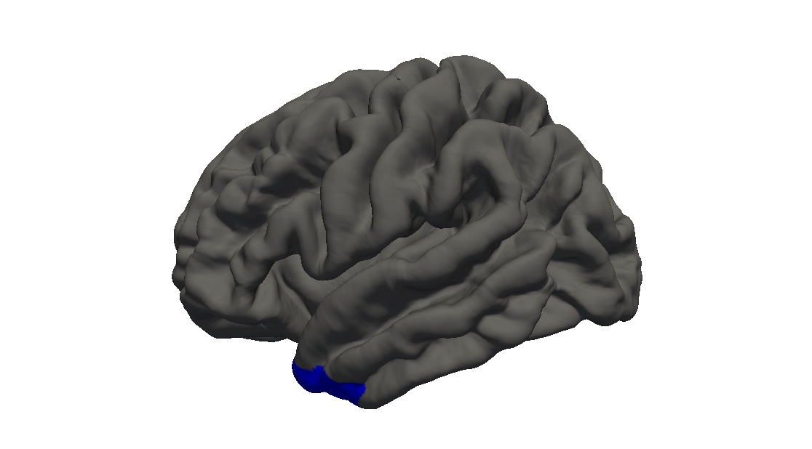
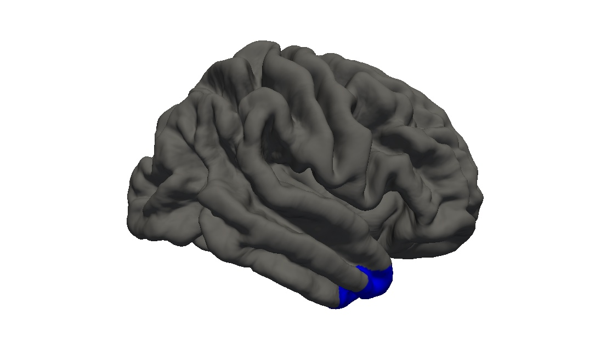

<h3>Pole_temporal -- localization</h3>




<h3>Pole_temporal -- <a href="../../measurebased/FreeSurfer.Destrieux/pctmean.html">mean grey-white contrast</a></h3>


<h3>Pole_temporal -- <a href="../../measurebased/FreeSurfer.Destrieux/area.html">surface area</a></h3>


<h3>Pole_temporal -- <a href="../../measurebased/FreeSurfer.Destrieux/thickness.html">mean cortical thickness</a></h3>


<h3>Pole_temporal -- <a href="../../measurebased/FreeSurfer.Destrieux/thicknessstd.html">standard deviation of cortical thickness</a></h3>


<h3>Pole_temporal -- <a href="../../measurebased/FreeSurfer.Destrieux/volume.html">grey matter volume</a></h3>


<h3>Pole_temporal -- <a href="../../measurebased/FreeSurfer.Destrieux/meancurv.html">mean curvature (extrinsic)</a></h3>


<h3>Pole_temporal -- <a href="../../measurebased/FreeSurfer.Destrieux/gauscurv.html">Gaussian curvature (intrinsic)</a></h3>


<h3>Pole_temporal -- <a href="../../measurebased/FreeSurfer.Destrieux/foldind.html">folding index</a></h3>


<h3>Pole_temporal -- <a href="../../measurebased/FreeSurfer.Destrieux/curvind.html">curvature index</a></h3>


